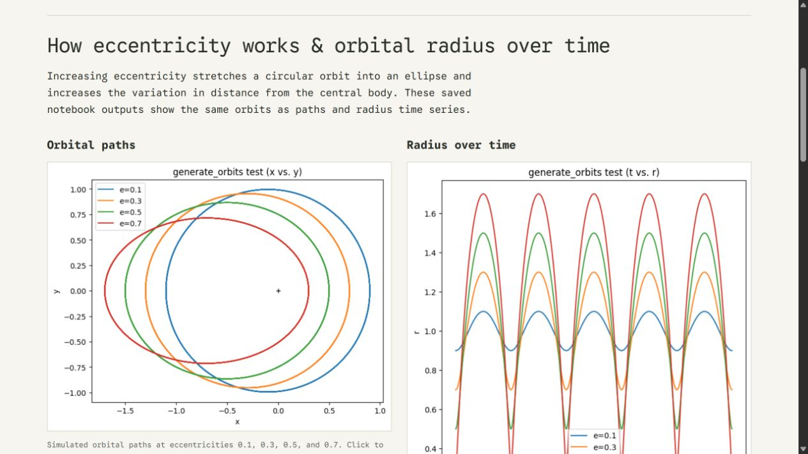
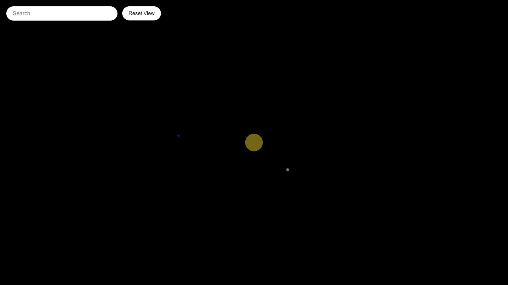

Hi, I am
Davis Germain
Major in Human Computer InteractionConcentration in Computer Graphics
Welcome to my page! As the major suggests, I am interested in all the ways that we, as humans, interact with computers (and the inverse). Ever since COVID hit and we were stuck inside on devices, it always intrigued me how tools were designed with users and their intents in mind. I have spent the last 3 years exploring this, and am loving every second!
You may then be wondering why the concentration in Computer Graphics. I've been playing games for many years and explored game development throughout high school using Unity tutorials and with programs such as the National High School Game Academy at Carnegie Mellon (Summer 2021) and Game Design in Extended Reality at Northeastern (Summer 2022). With all of my experience, I was interested in exploring how the developers create tools that I have used like Unity. Within computer graphics courses, I have learned how features such as rasterization and rendering actually work, as well as finally know what all those settings I pass over in games (like anti-aliasing) actually mean...
Thank you again for exploring my page!
Explore my projectsProjects
Newest project start dates first; course projects are dated by semester.
HCII Research under Canwen Wang
August 2026Helped develop and test a set of design principles for human-agent interaction and how well current agent systems follow them in practice
Quicksilver Labs Table Pairing
Summer 2026Below are 6 prototypes I created while working at Quicksilver Labs. The purpose for all of them was to take a suggested pairing between two database tables made by an algorithm and give the graders an easy way to go through each pairing and perform an action on them. The grader could then look at those decisions and make the final decision. Each new variation below was made within 48 hours to rapidly iterate on feedback. I would receive feedback on a design, rework it on paper, figma, or another tool, and then use AI to replicate my design in code before the next feedback meeting.
Design iterations, oldest to newest.
| Variant | Admin | Grader |
|---|---|---|
| 01 GitHub basic | Open | Open |
| 02 GitHub recommended | Open | Open |
| 03 GitHub table | Open | Open |
| 04 Popup action | Open | Open |
| 05 Table vs. column | Open | Open |
| 06 Heatmap | Open | Open |
Space / orbital forecasting
Summer 2026I did this research for Quicksilver Labs over the summer to see the viability of Time-Series Foundation Models (TSFMs) in another project I was working on. View the link below to see some of the graphs and research I did! The conclusion was that, while they were impressive, there were still some startling error rates within the velocity predictions and position predictions. Thus, this technology was not used for the application I was testing for.

Explore orbital forecastingQuicksilver Labs Newsletter Filter
Summer 2026A Flask newsletter-review application with external integrations. This preview shows a saved digest rather than the live dashboard.
View saved sample digestBeyondMaps
April 2026 – PresentA browser-based 3D solar system explorer with planet search and information. I decided to make this after watching Project Hail Mary as a fun side project. AI was used as an assistant for this, but all code was written by me.

Explore BeyondMapsA browser with WebGL support is required. This project is incomplete (school got the best of me), so some features may not be complete. I plan to work on planet and moon scale, moon placement relative to planet, and an alternate version to explore planets easier.
Design of AI Products
Spring 2026In this class, we were given between a week and two weeks to come up with an idea using a given application of AI. The final presentation for each group was a pitch for our technology, which is included below. Each project also has a process book included, which shows the timeline and process my group and I completed our work in.
- Health ConnectPitch · Process book
- ContractClarityPitch · Process book
- Canvas QuickClickPitch · Process book
- HandiToolsProcess book
Alien Stock Sim
Spring 2026A fictional stock trading game with live charts, buying and selling, profiles, and messaging.
MazeInteractive
Fall 2025A desktop Pygame pathfinding application exploring BFS, Greedy, and A* search. No browser demo yet.